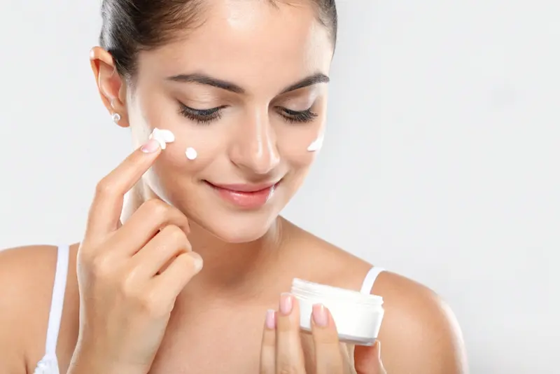
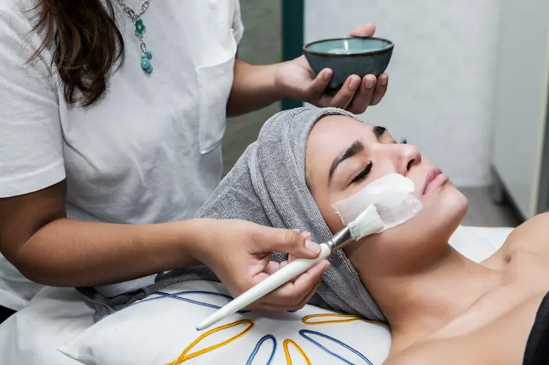

Acneea (coșurile) este o afecțiune inflamatorie a pielii, cauzată de modificări la nivelul structurilor pilosebacee.
Află cauzele apariției erupțiilor, metodele de combatere și regulile de îngrijire pentru a preveni semnele post-acneice.
Vezi serviciileCe este acneea și de ce apare?
Acneea nu este doar o imperfecțiune temporară, ci o afecțiune inflamatorie cronică a foliculilor pilosebacei. Principalele cauze sunt producția excesivă de sebum, blocarea porilor cu celule moarte (hiperkeratoză) și proliferarea bacteriilor C.acnes.
Apariția erupțiilor poate fi influențată de schimbări hormonale, genetică, îngrijire necorespunzătoare și stil de viață. Este important de înțeles că aceasta este o problemă care poate fi rezolvată, necesitând răbdare și activele corecte.
Stadiile de dezvoltare și tipurile de inflamații
Specialiștii disting acneea necomedogenică (puncte negre și comedoane închise) și formele inflamatorii (papule și pustule). În cazurile severe, se pot forma noduli și chisturi, care necesită intervenție medicală obligatorie.
Identificarea tipului de erupție este primul pas către alegerea unei terapii eficiente. Clasificarea corectă ajută la evitarea traumatizării pielii și la prevenirea formării cicatricilor.
Îngrijirea de bază pentru tenul problematic
Ingrediente care funcționează cu adevărat
| Ingredient | Acțiune |
|---|---|
| Acid Salicilic (BHA) | Pătrunde în pori și dizolvă dopurile de sebum |
| Acid Azelaic | Distruge bacteriile și luminează petele post-acneice |
| Retinoizi | Accelerează reînnoirea celulară și tratează comedoanele |
| Ulei de arbore de ceai | Antiseptic natural pentru reducerea inflamației |


Cele mai bune produse pentru acnee
Recenzie independentă. Conținut nesponsorizat.
*Acest material este o recenzie editorială independentă și nu
este sponsorizat de producătorul sau distribuitorul produsului.
*Toate mărcile comerciale, numele de brand și denumirile de
produse aparțin deținătorilor de drepturi și sunt utilizate
exclusiv în scop informativ și editorial.
*Informațiile prezentate exprimă opinia autorului și nu
constituie o recomandare oficială din partea producătorului.
*Linkurile sunt incluse în scop informativ. În cazul unui
parteneriat de afiliere, aici poate fi plasat un link direct
către produs.

Ce NU trebuie să faci când ai acnee?
Cum să eviți petele și cicatricile (post-acnee)?
Post-acneea reprezintă modificările secundare ale pielii după vindecarea inflamațiilor: pete reziduale (eritem), hiperpigmentare sau cicatrici. Regula de aur: nu stoarce niciodată coșurile, deoarece acest lucru traumatizează straturile profunde ale dermului.
Pentru corectarea petelor, folosește produse cu niacinamidă, vitamina C și acid azelaic. Aceste componente accelerează regenerarea și uniformizează nuanța tenului, făcând semnele post-inflamatorii mai puțin vizibile.
Influențează alimentația starea pielii?
Deși acneea este un proces hormonal și genetic, anumite alimente pot provoca exacerbări (triggeri). Printre acestea se numără adesea produsele cu indice glicemic ridicat (dulciurile, produsele de patiserie) și lactatele în cantități mari.
Totuși, dietele stricte nu sunt necesare pentru toată lumea. Cea mai bună abordare este menținerea unui jurnal alimentar și observarea reacției pielii tale, fără a uita de îngrijirea de bază și de hidratarea corectă.
Întrebări frecvente
Pot stoarce coșurile dacă par „coapte”?
Nu. Stoarcerea traumatizează țesuturile, împinge infecția mai adânc și aproape întotdeauna duce la formarea cicatricilor și a petelor post-acneice, de care se scapă mult mai greu decât de coșul în sine.
Cât de repede va funcționa noua rutină împotriva acneei?
Pielea are nevoie de timp pentru adaptare și pentru ciclul de reînnoire (aproximativ 28 de zile). Primele rezultate stabile pot fi evaluate după 4–6 săptămâni de utilizare regulată a produselor.
Ar trebui să usuc tenul gras cu loțiuni pe bază de alcool?
Acesta este un mit. Alcoolul distruge bariera de protecție. Ca reacție, pielea începe să producă și mai mult sebum pentru a se proteja, ceea ce duce la un nou val de erupții și la deshidratare.
Influențează soarele tratamentul acneei?
Soarele oferă un efect antiseptic temporar, dar apoi provoacă îngroșarea stratului cornos al pielii (hiperkeratoză), ceea ce duce la o exacerbare și mai puternică a acneei după câteva săptămâni.